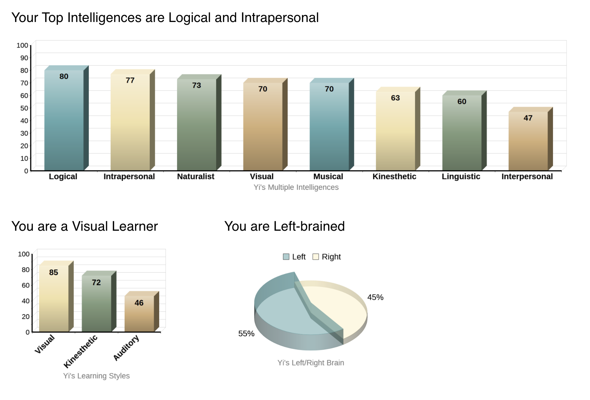
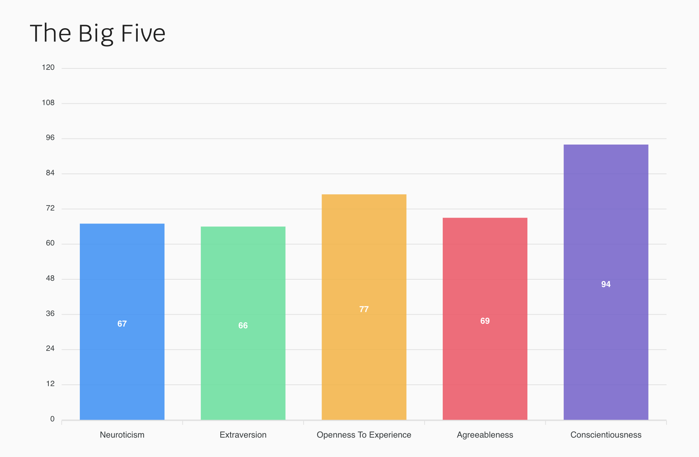

Personality tests
Test results
INTJ-A
Assertive Architect
test resultLogical and Intrapersonal
Examnier
test resultThe Big Five Test
Conscientiousness
Trust
These tests give the individual a better idea of who they are and a better understanding of how they can use their personality strengths to their benefit. Moreover, the results of the tests could also help one understand their weaknesses and try to find ways to improve on them.
The results of tests indicate that I was INTJ-A which is also called the architect group. I stand for Introverted, N for Intuition, T for Thinking, J for Judgment and A for Assertive. Being introverted means I prefer solitary activities and get exhausted by social interaction. I tend to be quite sensitive to external stimulation in general. Being intuitive means I am very imaginative, open-minded and curious and I prefer novelty over stability and focus on hidden meanings and future possibilities. Thinking individuals focus on objectivity and rationality, prioritizing logic over emotions. I tend to hide their feelings and see efficiency as more important than cooperation. Judging individuals are decisive, thorough and highly organized. I value clarity, predictability and closure, preferring structure and planning to spontaneity. Assertive individuals are self-assured, even-tempered and resistant to stress. Generally, I refuse to worry too much and do not push myself too hard when it comes to achieving goals. My learning type is visual which means that I learn better when I read or see pictures. The results of these tests helped me understand myself more. When forming a group I know that I would do a good job helping lead and manage the group. Using charts and graphs will also help me improve my ability to learn and achieve the team's goals. Overall, the results of my exams combined indicate that I have great skills working alone but I am good at leading others and managing the team as well as planning the future goals and aims of the group using pictures and visual material. I also have a good judgment in different situations and I am able to handle the case appropriately.

